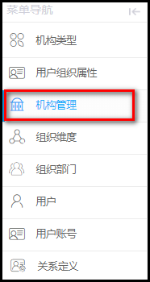
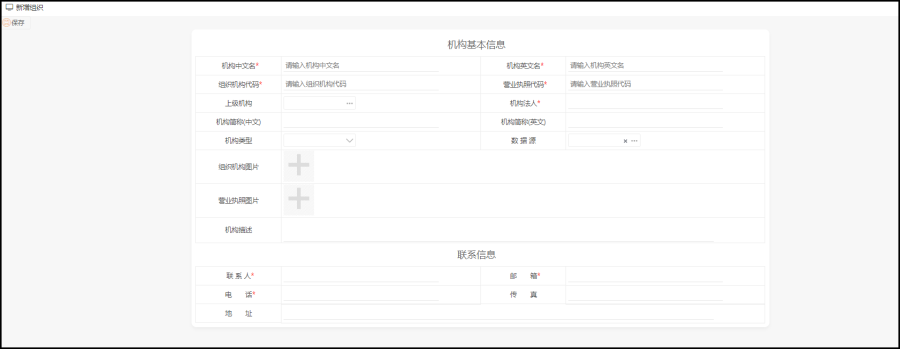
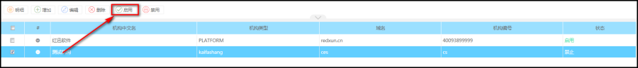

功能描述
租户在平台是一个独立的个体，可以有多个租户，每个租户是互不影响的，拥有独立的数据
操作步骤
菜单路径：组织管理--->租户管理

进入机构管理列表界面，如下图所示：

添加机构：
点击工具栏中的【添加】按钮，进入机构添加操作界面，如，填写完整的信息，点【保存】按钮。

默认的情况下，该机构的联系人的邮件会收到一封机构注册完成的通知邮件，邮件会显示登录的地址及密码，但需要行激活该机构。
管理员也可以在机构管理列表中，查看及管理机构状态，如激活该机构：

完成后，对应的机构的状态则显示为【启用】，那么在为租户定义定义机构类型是就可以使用该机构类型。